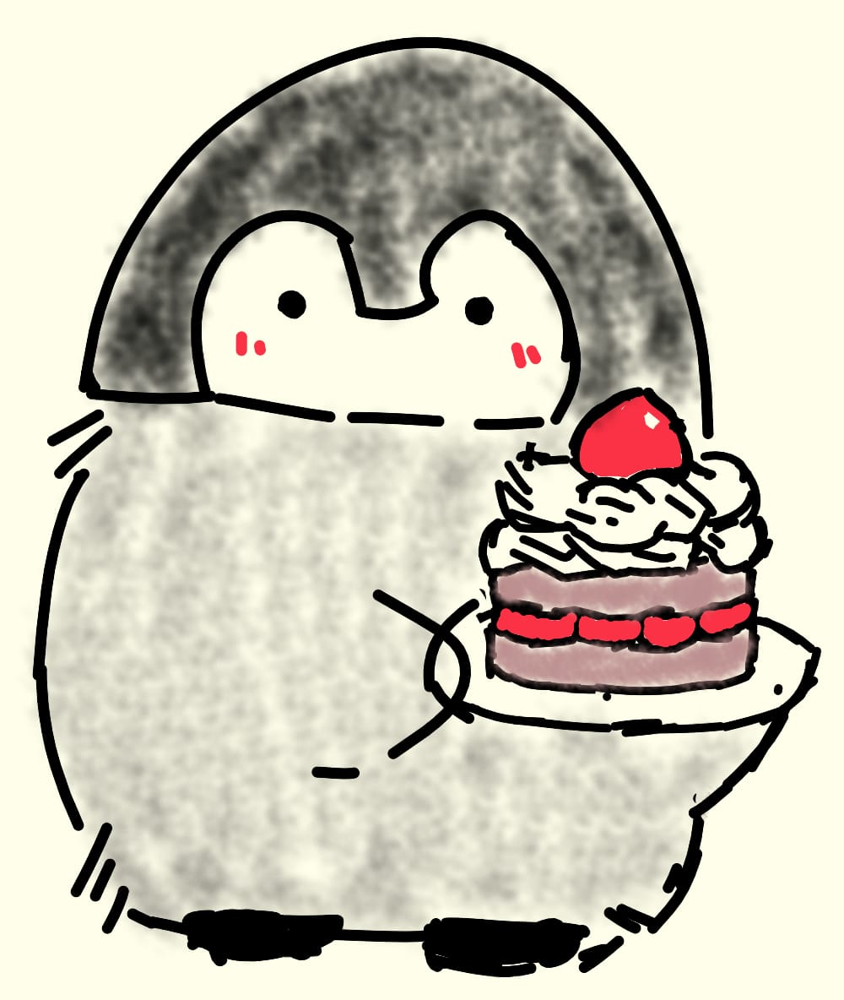
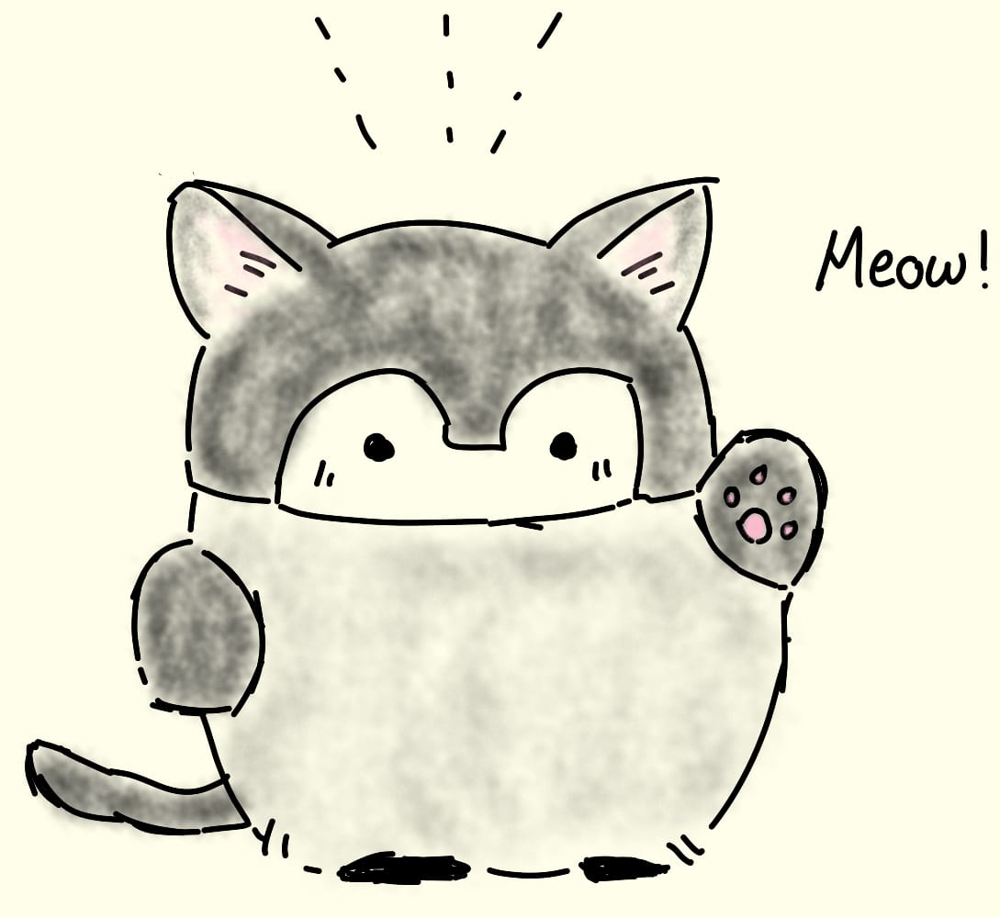
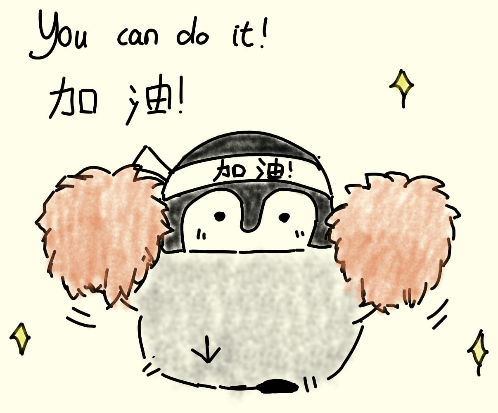
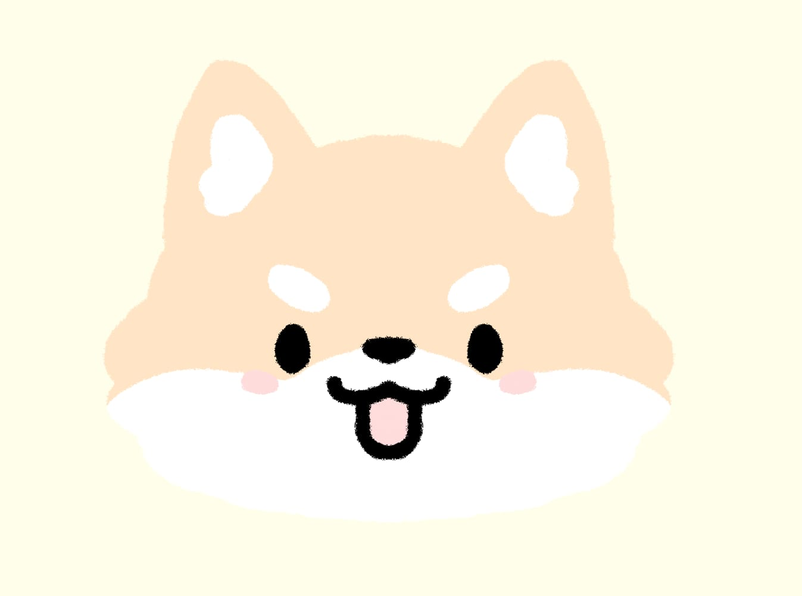
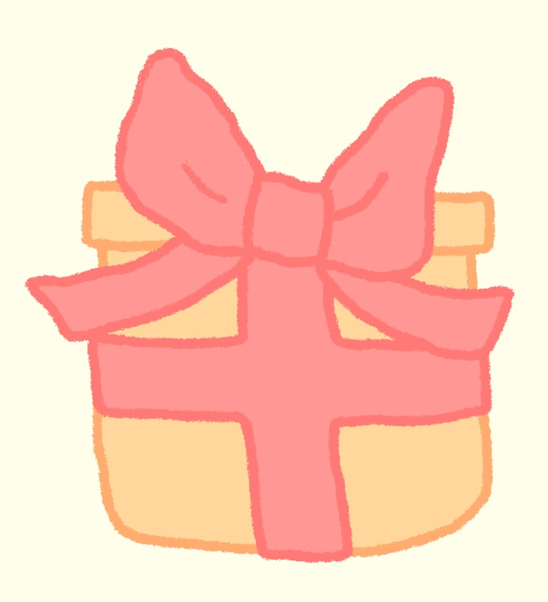

It's been a pleasure to know you
Hope your wishes comes true
Here's ur cake


Selamat tambah tua 1 tahun lagi.
Semangat y untuk ujian sama tugasnya.
Semoga dormnya keterima juga.


Click here :3

Happy birthday, Flo 鍾金花
×